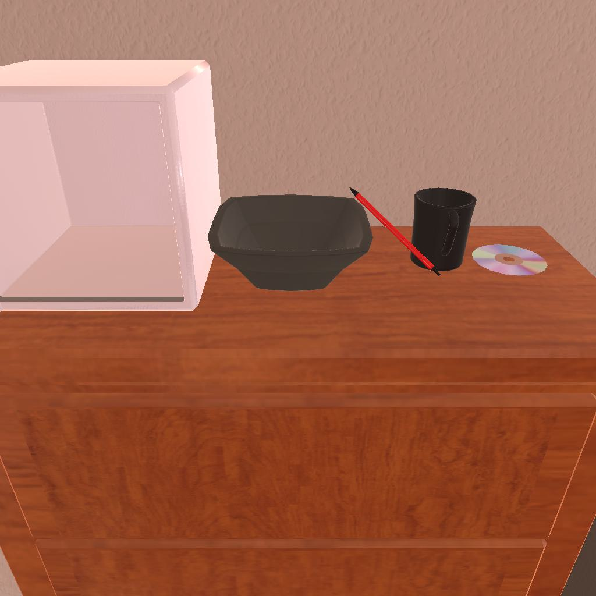

---------------------------------------------------------task: 6---------------------------------------------------------
--------------------------------------------------------------------------------------------------------------------------------------------------------------------
--------------------------------------------------------------------------------------------------------------------------------------------------------------------
Step:--------------------------------------------------------------------------6-------------------------------------------------------------------------------
----------------------------------------
VLM Prompt:
Image1:
Image2:
**Instruction**
1. Analyze the provided images to identify all visible household objects and compare the difference between images (e.h. whether the object is opened or not and taken on hand or not), focusing on those relevant to the task description "put some cd on safe."
2. Use the analysis of images and the task hint "The agent must find an object of the desired type, pick it up, find the correct location to place it, and put it down there." to answer the question: what is the most reasonable action in the choices for the task description "put some cd on safe"?
3. Decide and write the answer using the template: The answer is: (i): , where i is the real number. If there is no desired object in images, search every place based on **Initial Observation** to find the object. And if no one is exactly correct, choose a similar answer.
**Initial Observation**
You are in the middle of a room. Looking quickly around you, you can see bed (1-2), dresser (1), sidetable (1-2), drawer (1-11), desk (1), garbagecan (1), safe (1)
**Answer Choices**
(1): go to bed 1
(2): go to dresser 1
(3): go to bed 2
(4): go to sidetable 1
(5): go to drawer 2
(6): go to sidetable 2
(7): go to drawer 3
(8): go to drawer 4
(9): go to desk 1
(10): go to garbagecan 1
(11): go to drawer 5
(12): go to drawer 6
(13): go to drawer 7
(14): go to drawer 8
(15): go to drawer 9
(16): go to drawer 10
(17): go to drawer 11
(18): go to safe 1
(19): open drawer 1
(20): close drawer 1
(21): examine drawer 1
**Answer**
Let's think step by step by following the instructions.
----------------------------------------
----------------------------------------
Original Response:
Image Analysis:
In Image 1, we see a dresser with a microwave, a bowl, a red spatula, a cup, and a CD on the surface. The CD is the object relevant to the task description "put some cd on safe."
In Image 2, we see a sidetable with a pencil, a smartphone, and a tablet on it. There are no CDs visible in this image.
Task Hint Analysis:
According to the task hint, the agent must find an object of the desired type (CD), pick it up, find the correct location to place it (safe), and put it down there.
Based on Initial Observation:
The safe is mentioned as one of the objects in the room. We do not see the safe in either of the provided images, so we must search for it based on the initial observation.
Most Reasonable Action:
The most reasonable action to accomplish the task "put some cd on safe" would be to first go to the dresser where the CD is visible, pick up the CD, then go to the safe to place the CD on it. Since the images do not show the safe, we assume it's not in the immediate vicinity of the dresser or sidetable shown in the images. Therefore, the next best action is to search for the safe.
The answer is: (18): go to safe 1
----------------------------------------
----------------------------------------
>>> Refine Original VLM Response and Get Pure Action: go to safe 1
----------------------------------------
-----------------------------------------------------------------
Running time: 12.27459168434143 seconds
Total Money: 2.251350000000001
-----------------------------------------------------------------
-----------------------------------------------------------------
Text Observation:You arrive at loc 18. The safe 1 is open. On the safe 1, you see a bowl 1, a mug 1, a cd 1, and a pen 1.
-----------------------------------------------------------------
UNSUCCEED